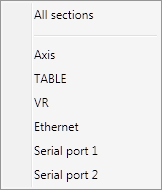
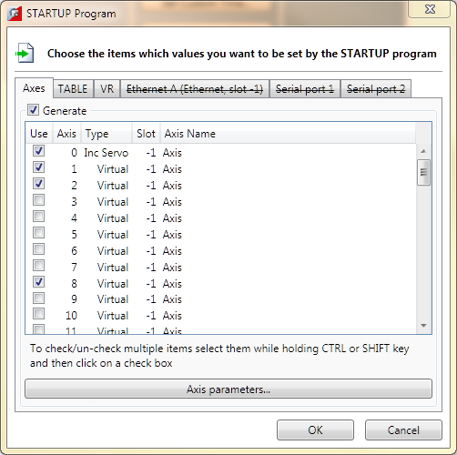
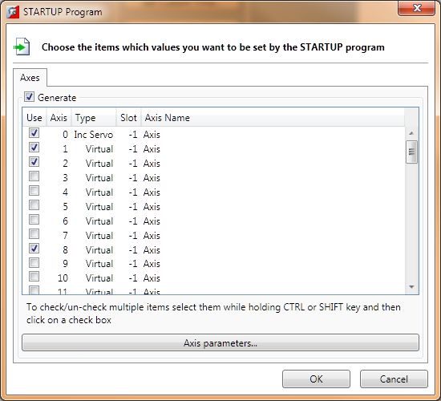
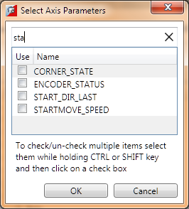
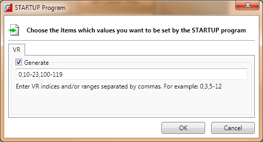
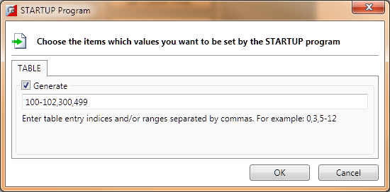
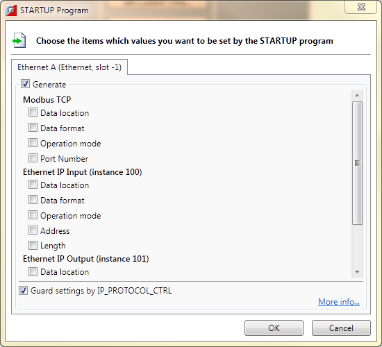
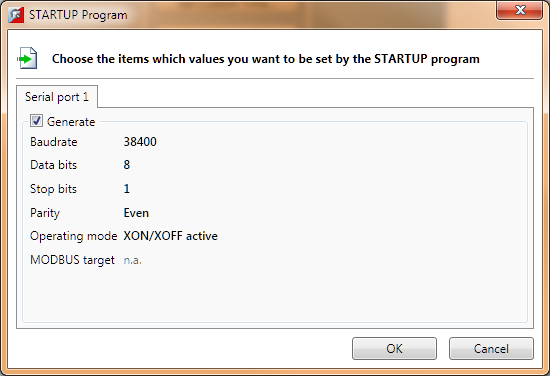

The STARTUP program is a user run TrioBASIC program used to initialize the system on power-up. It is commonly used to set up Axis Parameters, TABLE Areas, VR Variables, some Communications Parameters and Drive Parameters (when intelligent drive support is available). Adding Drive Parameters is handled by the appropriate drive configuration tool, all other data is handled by a common dialog set.
When “Modify STARTUP Program…” is selected from the “Project” item in the main menu the user is presented with a list of things which can be added to the STARTUP program.

Selecting “All Sections” will display a tabbed dialog with a tab for each type of data which can be added to the STARTUP program (except drive data).

If a single type of data is selected from the list the same dialog, but only containing the appropriate single tab.
To enable a data category tick the “Generate” check box on
the appropriate tab. Categories which are not currently enabled have the
category name in the tab struck out (
like this).

The axes whose parameters need to be stored should be selected in the axis table. After doing this click on the "Axis Parameters" button to display the "Axis Parameters Selection Dialog" which allows the user to select which parameters should be stored. The same parameters are stored for all selected axes. Parameter names are sorted alphabetically and a search facility is provided to help locate parameters by name.
To search for a parameter type part of its name into the search box. As characters are entered into the search box the contents of the list is filtered to those parameters containing the string entered.

To clear the filter, click on the button to the right of the search text box.

VR variables can be stored by specifying variable numbers and ranges of variable numbers.
e.g. 1,4,6-9,12-23 will store VR(1), VR(4), VR(6) to VR(9) and VR(12) to VR(23)

TABLE values can be stored by specifying table indices and ranges of table indices.
e.g. 1,4,6-9,12-23 will store TABLE(1), TABLE(4), TABLE (6) to TABLE (9) and TABLE (12) to TABLE (23)

The basic Ethernet parameters are not set using the STARTUP program, but using the MC_CONFIG file. The user can only store settings for specific protocols running over Ethernet (i.e. Modbus TCP and Ethernet IP).

The user can only control whether or not to store all the serial parameters.
When the OK button is pressed a warning dialog is displayed. If the User OKs this then all selected values are written to the STARTUP program which is then uploaded to the controller.